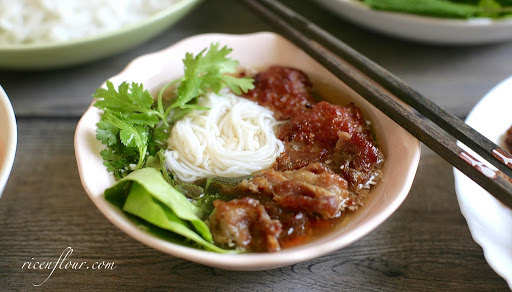
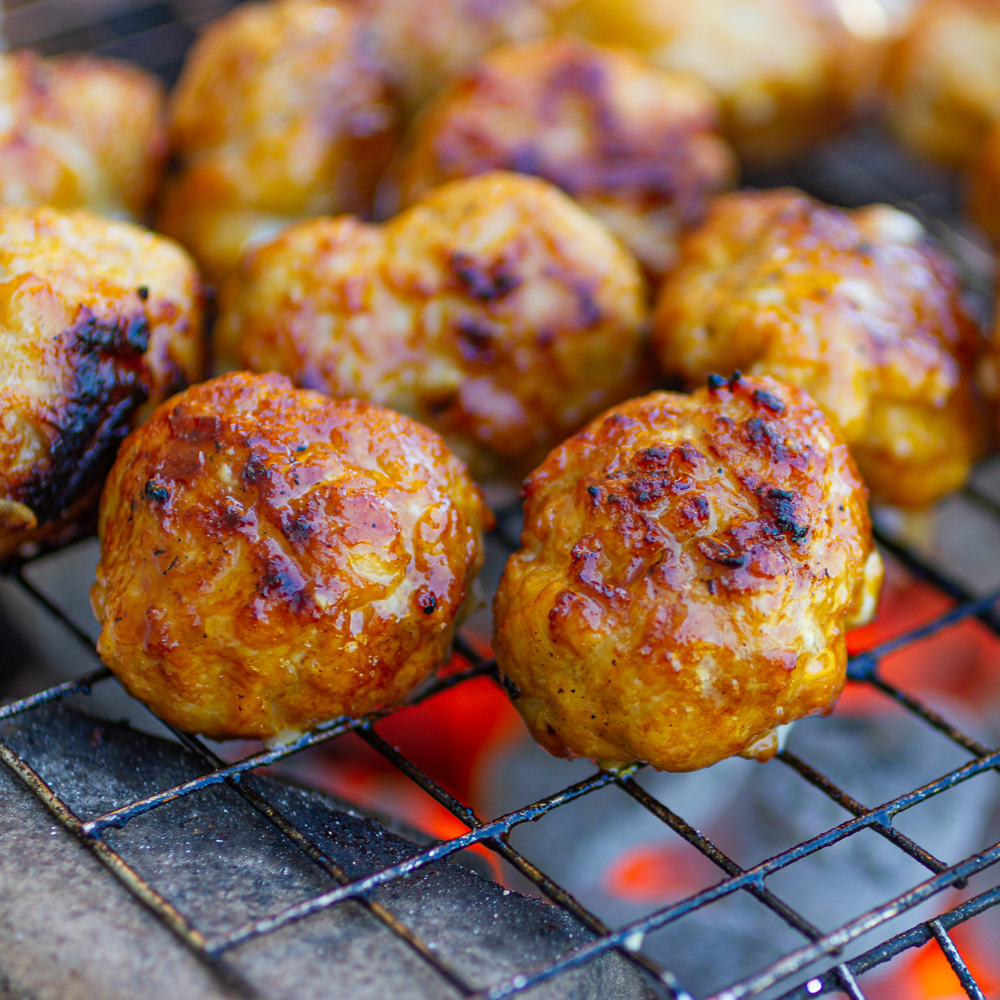
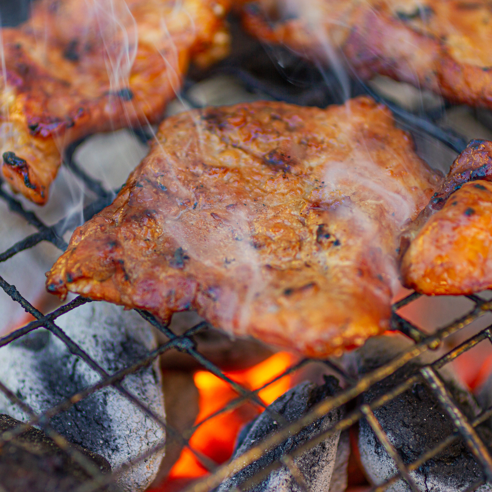
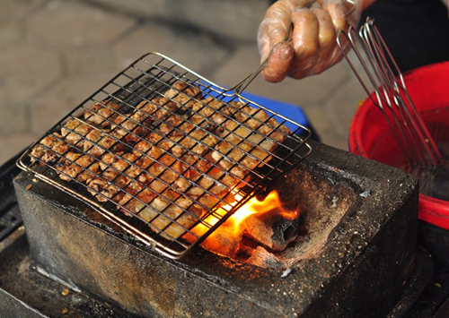
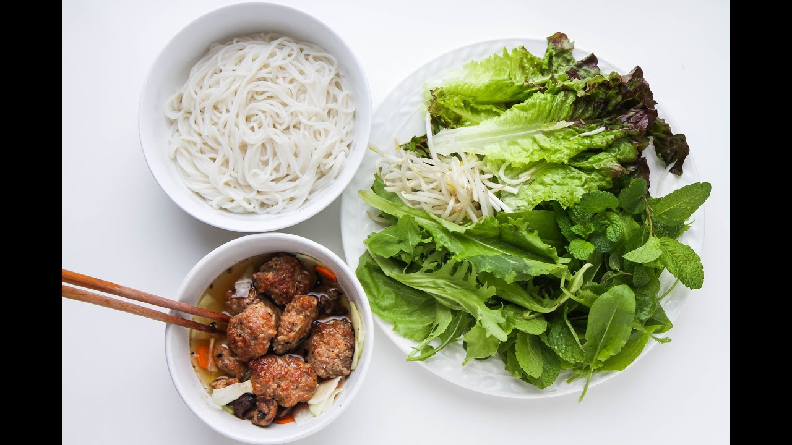
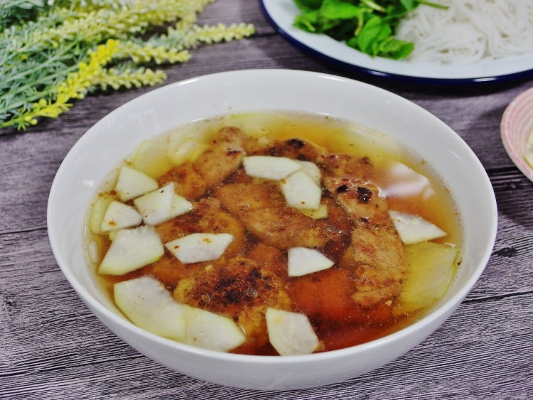

Vietnamese Vermicelli Noodles with Grilled Pork (Bun Cha)
The content of this website is based on the recipe
here.
What is Bun Cha?
Vermicelli Noodles with Grilled Pork, or Bun Cha, is a very popular and
delicious Vietnamese dish. Bun Cha is round rice noodles served in a bowl
of dipping sauce with grilled pork, pickles, and greens.
Although originally a street food specialty, Bun Cha is also a popular
homemade dish. This recipe is all you need to create the mouth-watering
grilled pork patties and pork belly. Along with them are pearly white rice
vermicelli, a basket with all sorts of greens, a bowl of dipping sauce
with some sliced pickled carrots and green papaya, and of course, those
beautifully charred pork pieces.

How to make Bun Cha?
Ingredients
Vietnamese Caramel sauce
70 grams (5 tbsp) sugar
150 ml (1/2 C + 2 tbsp) hot water
Grilled Pork
450 grams (1 lb.) pork shoulder or pork belly (choose a fatty piece
to prevent the meat from drying out while being grilled)
450 grams (1 lb.) minced pork (similarly, choose minced pork with at
least 10% fat)
50 grams shallots
15 grams garlic
Fish sauce
Oyster sauce
Side Pickles
400 grams green papaya, carrots, kohlrabi
25 grams (2 tbsp) sugar
15 ml (1 tbsp) rice vinegar or lemon juice
3/4 tsp salt
Fresh herbs to serve: coriander, perilla, lettuce, Vietnamese
balm,...
Dipping sauce and Noodles
Dipping sauce
is an essential condiment in Vietnamese cuisine, and usually consists
of fish sauce, sugar, lime juice/lemon juice/rice vinegar, water and
minced garlic and chilli to taste. My preferred ratio is 1 sugar : 2/3
acid : 1 fish sauce : 7 water.
25 grams (1.5 tbsp) sugar
15-18 ml (1 tbsp) lemon juice/rice vinegar
175 ml (3/4 cup) water
15-20 ml (1-1.5 tbsp) fish sauce
Garlic, chilli, black pepper
1.5 kg fresh rice vermicelli noodles or 0.5 kg dried rice vermicelli
noodles
Instructions
Picking the Cut, Marinating and Grilling the Meat:
Choose a fatty cut of pork, either pork belly or pork shoulder, to
prevent the meat from drying while being grilled. I prefer pork
shoulder because it is relatively leaner than pork belly, and the
melted pork shoulder fat has a crunchy texture and savoury buttery
flavour, which is rather fun to devour.
Vietnamese caramel sauce is NOT like the sweet caramel sauce served
with desserts, but is rather used as a food colouring to give the
meat in savoury dishes a golden brown colour. It is really easy to
make: simply boil sugar and water together. However, you can
substitute Vietnamese caramel sauce with golden syrup or honey, or
even the homemade golden syrup leftover from making mooncakes! The
sugar content in all of the above will caramelise while you grill
the meat, giving the pork not only a scrumptious chargrilled colour
but also a smoky sweet caramel-like flavour.
The pork is best grilled over charcoal fire, charcoal grilled pork
has a far superior smoky flavour to oven grilled one. If you are
using the oven, put the meat over a wired rack or a pizza pan,
surfaces that allow the meat itself to be exposed to the heat from
the top and the bottom. This will prevent the pork from being too
dry, the grilled meat will be more tender as the heat is distributed
evenly throughout.



Making the pickles
Vietnamese cuisine is known as one of the healthiest in the world.
Almost all Vietnamese dishes have vegetables, especially meaty and
fatty dishes, to balance out the flavours, textures as well as the
nutrients. You will easily find pickles and an abundant amount of
fresh herbs and vegetables being served with many Vietnamese
traditional dishes, and they usually come free with your meal in the
restaurant by the way.
Pickles in Bun Cha (and many other dishes such as crispy Vietnamese
pancakes) are usually made of thinly sliced green papayas and
carrots. Cucumbers or kohlrabies are also great substitute for green
papayas, and the contrast between the green and the bright orange
colour of the pickles makes your dish more eye-catching and
appealing.
Pickles are also made fresh rather than preserved for a long time.
When you make the fresh pickles, it is important to add sugar first
rather than salt, as it will help the pickles be more crunchy.
Adding salt will immediately draw out the moisture from the
vegetables and make them a bit tough to chew.
Boiling the Rice Vermicelli:
If you have fresh rice vermicelli, perfect. You just need to poach
it through hot water just before serving, so that the rice
vermicelli will soften and soak up the dipping sauce better.
If you do not live in Vietnam or near a big Asian market, it is more
likely that you will end up with dried rice vermicelli. Although
some packages say that the noodles can be soaked in hot water before
serving, I find that the noodles do not expand properly even after
being soaked for a long time, and thus would prefer to boil them in
a pot of hot water. You can also poach the noodles through hot water
again just before serving.

Making the dipping sauce:
The salt content of fish sauce varies from different types, so there
is no fixed ratio to make the dipping sauce.
What I would recommend is to mix sugar, lemon juice and water
together first, taste it to make sure you are happy with the lemon
juice. Then, gradually add fish sauce to taste. Tasting as you go
along rather than dumping all the ingredients in at once will help
you identify easily which flavour component (sweet, sour,
savoury,...) is lacking.
When added into it, the garlic (and chilli) should float on the
surface, it looks more visually appealing rather than chunks of
garlics sinking at the bottom.

Watch the video below for more details
You made it! Now enjoy the tasty bowl of Bun Cha at home!